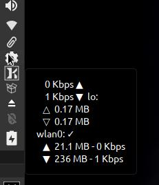
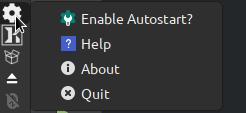
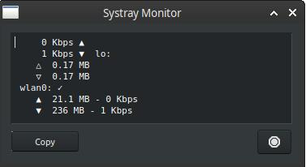

A tool that resides in the system tray / notificiation area that allows for easy monitoring of terminal command output. The output is displayed in a tooltip accessible by hovering over the tray icon.
The system tray icon is a standard theme icon (applications-system) symbol and will vary with system icon theme.
Right clicking the icon will bring up a context menu.
Left clicking the icon will also bring up the action window displaying the same output as the tooltip.
A copy button is available that will take the currently displayed output and copy to the system clipboard.
To close the action window, simply click outside the window, press ESC, or click the Cancel Button.
Development history: Dolphin_Oracle
v. 22.11.01